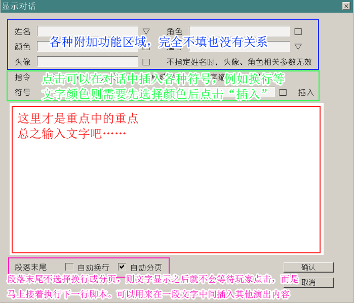

接下来，之前在界面编辑器里制作的对话框界面就要派上用场了。
使用方法很简单，新开一行脚本，从指令列表里选择“话框样式”，然后选择“对话框/全屏框/透明框”中的一种。
请记得在任何显示对话的操作之前，必须要先显示这三种对话框中的一种。
否则的话，会有无法在正常的位置显示对话，甚至完全不显示的情况发生。
通常来说，选择“对话框”就可以了。
比较特殊的情况如描述，可以选择“全屏框”，特殊场合也可以用到“透明框”，直接在画面上显示文字。
之前遇到过不少人问“（在界面编辑中）我不想要头像，头像怎么去掉”。
请注意游戏实际测试中，只要你不使用“显示头像”指令，头像就永远不会出现。
因此请无视这个问题，继续往下看。（当然如果你的游戏没有用到头像，这一节就可以忽略了。）
THE NVL Maker里，显示头像有几种方式。
一种是输入对话时，将头像图、人物图、姓名一起输入，还有一种则是单纯显示图片。
前者适合大部分情况使用，也比较有效率。
但是也有少数情况，需要用到只显示头像图片的功能，例如说，“人物说话到一半的时候改变表情”。
这种时候就要用到“显示头像”指令了。
依然是先选择图片文件，然后是显示效果，这些和背景、人物图的显示都没有什么差别。
头像的位置已经在界面编辑的时候确定了，因此不需要特别指定位置。
比较特殊的则是“显示头像”附加的功能“同时显示人物”。
这个功能可以让你指定的头像图片和人物图片一起显示，适用于以下的情况：
游戏画面上同时存在人物角色图和头像，在头像改变表情时，对应的人物角色图同时改变表情。
在这里“同时显示人物”只有文件和编号的参数，并会沿用之前同一编号图层的图片位置。
例如说，第一次显示的人物图片为居中，编号1，那么在这里更换图片，继续选择编号1，就会自动显示在居中的位置上。
这样就把“显示人物”和“显示头像”合成了一条指令，可以少输入很多东西。
（当然，如果需要同时改变人物位置，那“显示头像”指令就不适用了。）
接下来就到了输入对话的时候。继续新开一行脚本，选择“显示对话”。

显示对话指令的界面比较复杂，不过请看上方的功能说明截图。
总体由四个区域组成，
最上方是附加的功能区域，可以在输入对话的同时，一并选择人名及人名颜色、头像、角色图及编号。
接下来是特殊符号区，点击上面的各种符号，就可以在当前对话中插入各种特殊符号，例如对话中等待点击、缩进等。
在特殊符号区里，也可以选择一种颜色并插入到文字中，就会改变这个指令之后的文字颜色。
而这些改变都会被插入到下方的文字输入区域里。
最后则是段落末尾自动换行或者分页的选项。假如勾选了这两项之一的话，会在文字段落后自动插入等待标记。
也就是说，可以一次性输入多段对话，用ENTER键将他们隔开。那么每个ENTER键的地方，就会等待玩家点击。
不过文字输入区域的范围是有限的，由于制作能力限制，也没有做滚动条这样的功能。
因此假如真的需要一次性输入例如一整章的描述等，采用“直接编辑”是个更好的办法。
现在需要用到的就只有文字输入区域而已。
请随意输入你想写的内容，然后运行游戏测试一下吧。
因为输入对话时并没有输入人名，这里选择的就是“全屏框”，画面上没有姓名栏。
现在可以换成有姓名栏的版本尝试一下了。
依然是新开一行脚本，选择“话框样式”-“对话框”。这些之前已经做过一次了，相信不会很难的。
接着继续新开一行，选择“显示对话”。
这次要做的则是把人物姓名、头像和对话一起输入。
之前已经介绍过了“姓名编辑”界面，在姓名编辑界面输入并保存的人物名，就可以直接从下拉菜单中找到。
假如是没有输入过的临时用名，可以在这里直接填写名字，以及临时指定名字的颜色。
例如这里直接输入了“路人甲”并选择了特殊的颜色0x33CCCC。
接下来依旧随便选择一张头像。
并在文字输入区域内继续写点什么。
然后确认保存测试……
和“显示头像”的指令一样，这里也提供了与头像一起，改变人物图的功能。（当然不显示头像，只改变人物图也可以。）
依然是只要指定人物图片和编号，参数是完全一样的，就不必多说明了。